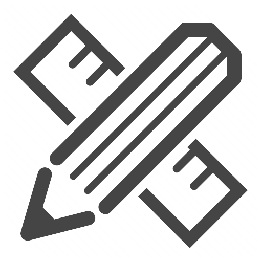
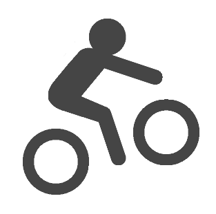

Instead of most focusing on improving the accuracy of algorithm during undergraduate, I felt excited to put it into real-world use and infused a little more efficient and intelligent into daily life. That’s why I stepped into design. I really enjoy coming up with new ideas and scenarios incorporating AI.
For my interaction design internship in Tencent, I wrote the article ‘A designer’s guide to machine learning’ and also came up with new ideas for three projects. I know it’s just a start! I become more determined to AI products, especially my understanding of the core principles, abilities and constraints of algorithm can greatly facilitates the process.
Following are some AI issues I’m thinking about recently, any feedback or discussion is welcomed:
ML: How to balance between automatic and intelligent with flexibility and control? How to balance between personalization and consistency?
Non-visual UI: What’s the best contexts of using UI and non-visual UI (voice interaction or haptic feedback), and how to combine multi forms of interaction?
Automatic Car: How to improve the communication and negotiation between machine’s intention and people’s intention? (pedestrian and car, driver and car)
My background is data visualization and accessibility
Data Visualization: During my undergraduate and internship in Microsoft Research Asia, I’m a visualization designer and developer. I’m obsessed with developing interfaces to help people better explore, interact with data to get more insights.
Accessibility: In the past year, when I’m a research assistant at Georgia tech, I realize designing considering people with different physical abilities is more challenging! I always try to think more comprehensive and gradually gain more empathy especially after deeper contact with users. Right now I also focus on designing ‘non-visual UI’ and combining multiple modalities that can meet all users’ needs to create an optimal experience regardless of ability.
Infinity within the Finity
Like the icon I designed, I’m always finding and pursuing “Infinity within the Finity”, “possibility within the certainty”. “From Follower to Pioneer”, it is what I believe and what I want to be.
My Design Philosophy
Design communicates obvious function: Use logical thinking to prioritize information, communicate clear, obvious, intuitive functions and provide seamless guide for users of how to interact with it.
Design should incentive engagement and motivation: Use empathy to understand the end users and their needs and create moments of delight for people who encounter it.
Understanding the core principles, abilities, and constraints of advanced technology(e.g. Machine learning, Image recognition) helps me improve the rationality of design process. Accumulation in web and iOS development facilitates the communication between designer and developer.
Things I love...

Design
UX and UI - Adobe Photoshop, Illustrator, InDesign, Sketch.
Photography
Instead of under cultural bias, I prefer to embrace the multiplicity of life. I believe, where there is the possibility, there is creativity.
Music
Use rhythm in piano, posture in ballet as a way to understand and express emotions. National certificated at the age of 12!
Front-end Development
Experienced coding for iOS App in Swift, Objective C; and coding for web in JavaScript/ TypeScript, D3, PHP, HTML, CSS.
Travel
Traveling around the world has made me more open minded and broadened my perspective on the design industry.

Sports
I love all kinds of sports. I cycled 2000 km in summer with my 14 dear teammates. I’m the champion of Sit-up at Peking University Athletic Meeting. I also love rock climbing, diving, hiking...
About This Site
This site was designed and coded with help and suggestions from many. Thanks to Ben Li and Jason Wang for technical support. And Shaojing Shen for my profile photo.